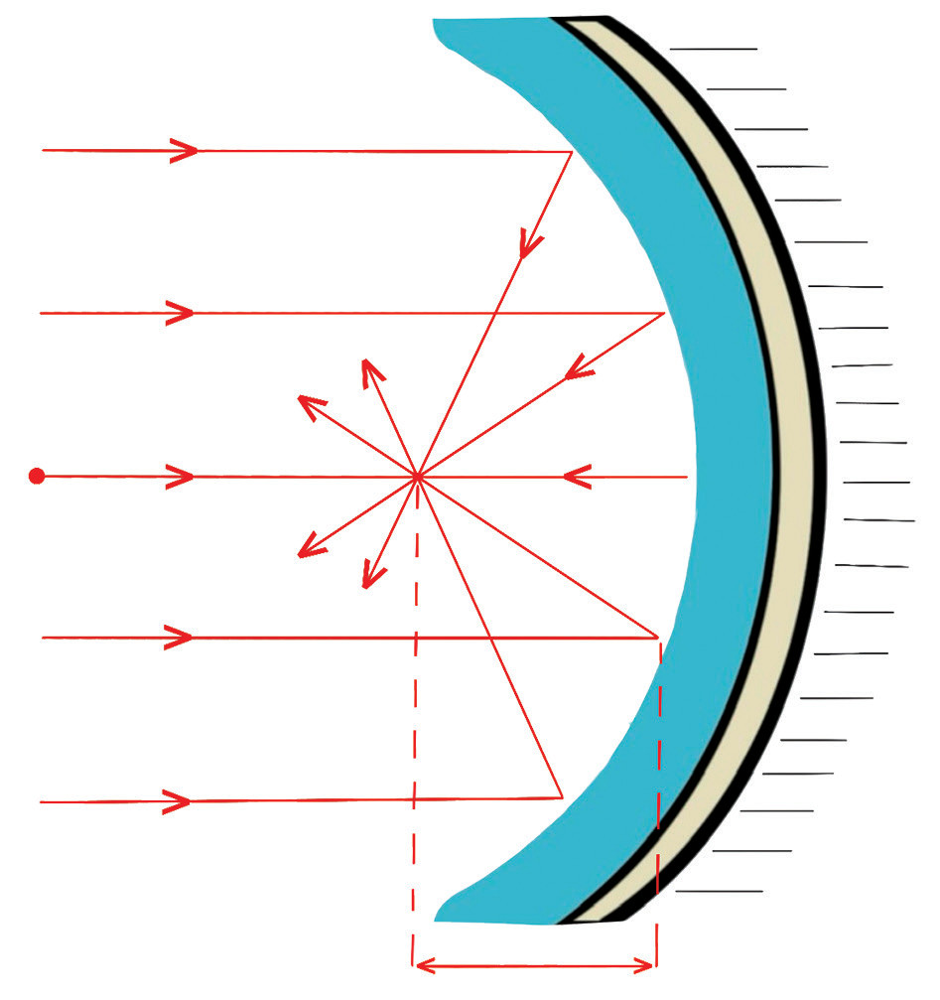
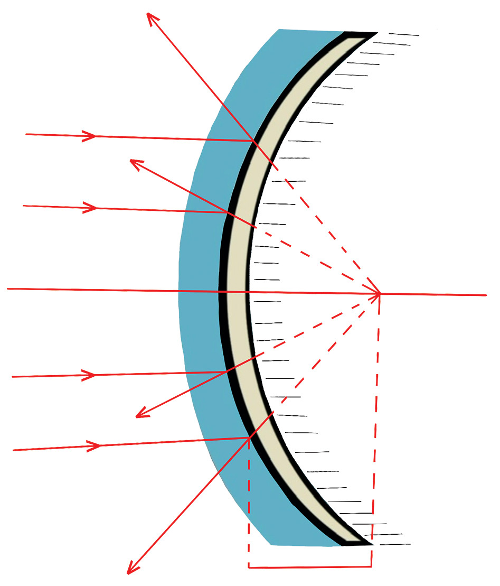

Figure 4.21: Geometry of curved mirrors
The pole acts as the centre of the mirror, with the principal focus (F) positioned halfway between the pole and the centre of curvature (C). In concave mirrors, the focal point is where all parallel rays of light come together; in contrast, for convex mirrors, the focal point appears as a location from which light rays spread out. The radius of curvature (R) refers to the radius of the sphere from which the mirror originates, and the focal length (f) is half that radius, indicating the distance from the mirror to the focal point. Figure 4.21 shows the geometry of curved mirrors.
A virtual image is formed when light rays appear to originate but cannot be focused onto a screen, while a real image is created where actual light rays intersect and can be projected onto a screen. The image distance is the distance from the image point to the pole, and the object distance is the distance from the object to the pole. Magnification is the ratio of the image height to the object height , and it can also be expressed as the ratio of the image distance to the object distance. We perceive an image because light from the object reflects off a mirror and travels to our eyes, similar to how we see the object itself.
Relationship between focal length and radius of curvature
Consider the reflection of light ray I from a concave mirror at point M. CM is a line normal to the mirror surface and passes through the centre of curvature, and MF is the reflected ray, which passes through the focal point. Performing Activity 4.7 develops knowledge on practical solving for radius of curvature of curved mirrors.
(as we know that the angles of incidence and reflection are equal)